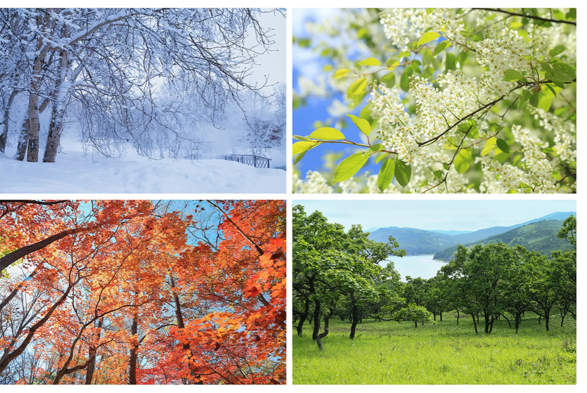
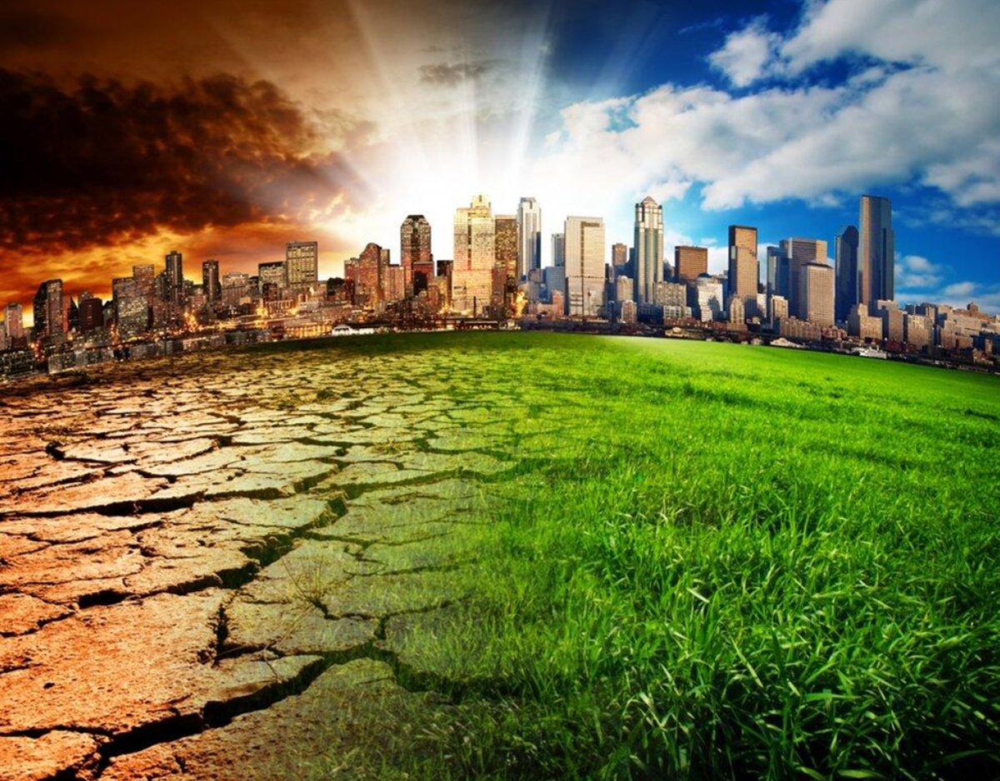

Research Questions
- How have weather patterns changed over the years?
- I want to study how temperature, wind, and conditions differ from year to year.
- I also want to look at how variable weather is across multiple years.
- I want to see if effects like climate change are visible across a short time frame.
- What weather patterns are consistent across years?
- I want to see what temperatures and conditions line up with the seasons.
- I also want to check if fluctuations in seasons are consistent, like if snow consistently comes back in April for a couple days.
- I want to see the most variable times of the year. Maybe April 19th is 30 degrees one year and -10 degrees the next?

- What were the most extreme days for temperature, wind, and other factors?
- I want to see what months and years had the highest records for temperature, wind, and whatnot.
- It would be interesting to see if the most extreme days all fall in the same year, or are spread across years.
- It would also be interesting if extreme days are all more recent in line with climate change, or if there's no visible correlation.
